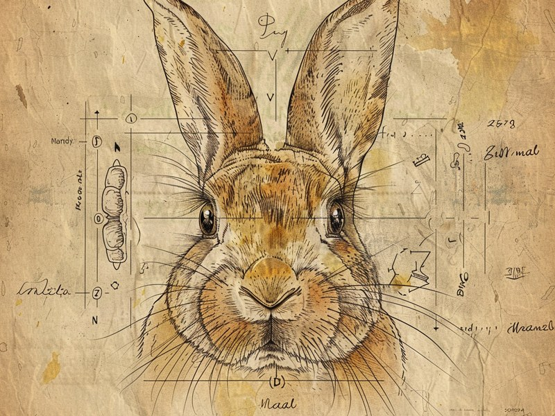

うさぎの体には、犬や猫とはまったく違う「しくみ」がいくつもあります。一生伸び続ける歯、暑さに弱い体、驚くほど広い視野——それぞれの特徴を知っておくと、毎日のお世話で「なぜこれが大事なのか」が腑に落ちるようになります。 Rabbits are built very differently from dogs and cats. Their teeth never stop growing, they struggle with heat, and their eyes see almost all the way around. Understanding these traits makes everyday care far easier to get right.
🔍 ちょっと寄り道:生まれ持った気質という意味では、人にも生年月日から占う視点があります。気になった方は黒曜診断を覗いてみてください。
歯は一生伸び続ける:だから牧草が「歯のやすり」になる
うさぎの体でまず知っておきたいのが、歯のしくみです。うさぎの歯は「常生歯」と呼ばれ、一生を通じて伸び続けます。本数は上顎に16本、下顎に12本の計28本。前歯にあたる切歯は、上顎で週に約2mm、下顎で週に約2.4mmというペースで伸びていき、月に換算すると1cm前後にもなります。人間の感覚でいえば、毎月1cm伸びる爪を放っておくようなものですから、何もしなければ当然伸びすぎてしまいます。それを防いでいるのが、毎日の食事です。繊維質の牧草をすりつぶすように噛むことで、歯は自然に削れて適切な長さに保たれます。つまり、うさぎにとって牧草は「ごはん」であると同時に「歯のやすり」でもあるのです。飼育の基本として「牧草はいつでも食べられるようにしておく」と言われるのは、この体のしくみに理由があります。
出典: 獣医師ママの note「うさぎの歯について」 note.com / アニコム損保「うさぎの歯のはなし」 anicom-sompo.co.jp
「食べない」は緊急サイン:歯と腸はつながっている
歯が伸びすぎたり噛み合わせがずれたりすると、「不正咬合」という状態になります。こうなると食べ物をうまく噛めず、採食が困難になって、命に関わることもあります。ここで押さえておきたいのは、うさぎにとって「食べないこと」そのものが大きなリスクだという点です。うさぎは牧草を絶えず食べることで腸の運動を保っている動物で、絶食が続くと胃腸の動きが低下し、深刻な状態を招くことがあります。つまり、牧草の常時摂取は「歯の伸びすぎ防止」と「腸の運動維持」という2つの役割を同時に担っているわけです。飼育の場面でこの知識が役に立つのは、「いつもより食べていない」「牧草に口をつけない」といった変化に気づいたときです。犬や猫なら「今日は食欲がないのかな」で様子を見ることもあるかもしれませんが、うさぎの場合は歯のトラブルや胃腸の不調が隠れている可能性があり、早めに動物病院へ相談する判断が大切になります。
出典: よしだ動物病院「うさぎの不正咬合」 yoshida-ah.jp / うさぎタイムズ「うさぎの種類」 ferret-link.com
暑さに弱い体:体温調節が苦手だから夏の環境づくりが要
ふわふわの毛に包まれた姿を見ると想像しにくいかもしれませんが、うさぎは暑さにとても弱い動物です。体温調節が苦手で、気温が上がる季節には熱中症のリスクが高くなります。犬のように舌を出してハアハアと熱を逃がすことも、人のように汗をかいて体を冷やすこともうまくできないため、周囲の温度がそのまま体に響いてしまうのです。飼育に役立てるなら、「うさぎは自力で暑さをしのげない」と割り切って、環境側で暑さを遠ざけるのが基本の考え方になります。直射日光の当たらない場所にケージを置く、部屋の空気がこもらないようにする、暑い時期は日中の室温に気を配る——こうした一つひとつの工夫が、うさぎにとっては体温調節の代わりになります。留守中に部屋が暑くなりやすいご家庭では、特に注意しておきたいポイントです。
視野はほぼ全方位、でも真正面は意外と苦手
うさぎの目は顔の側面についていて、その視野はとても広いとされています。片目で約190度、両目を合わせると約355度と、ほぼ全方位を見渡せる計算です。野生では捕食者から身を守る必要があるため、背後の気配まで捉えられる広い視野が役に立つのでしょう。一方で、両目の視野が重なって立体的に見える範囲は、前方で約10度、後方で約9度と狭いとされています。つまり、真正面の近い距離にあるものは、かえって捉えにくいということです。この特徴を知っておくと、接し方のヒントになります。たとえば、正面から急に手を伸ばすと、うさぎにとっては「よく見えないところから何かが迫ってきた」と感じられるかもしれません。声をかけてから、ゆっくりと横や斜めから近づく——そんな小さな配慮が、うさぎを驚かせずに信頼関係を築くことにつながると考えられます。
出典: うさぎタイムズ「うさぎの視力・視野・色の見え方」 ferret-link.com
群れで暮らす動物:ひとりの時間が長すぎないか気にかける
うさぎは社会的な動物で、野生のアナウサギは複数頭の群れで生活しています。飼育下でも、うさぎタイムズによれば複数頭で飼育するほうがQOL(生活の質)が高いとされています。もちろん、一頭飼いがいけないというわけではありませんし、相性やスペースの都合もあるでしょう。ただ、「本来は仲間と一緒に過ごす動物なのだ」と知っておくだけで、日々の接し方は少し変わってきます。ケージの中でひとりきりの時間が長すぎないか、部屋に出して一緒に過ごす時間を持てているか、声をかけたりそばに座ったりする習慣があるか——こうしたことを意識するだけでも、うさぎにとっての「群れの仲間」に近い存在になれるかもしれません。おとなしく静かな動物というイメージがありますが、その内側には仲間を求める社会性がしっかり備わっているのです。
出典: うさぎタイムズ「うさぎの社会性・行動学」 ferret-link.com
うさぎの平均寿命は7〜8年とされていますが、近年は10歳を超える子も珍しくないという報告があります。ギネス記録はなんと18歳10ヶ月。歯と腸を守る毎日の牧草、暑さを遠ざける環境づくりが、長く一緒に暮らすための土台になるのかもしれません。(出典: アニコム損保 anicom-sompo.co.jp)
ミニクイズ:うさぎの歯は、大人になると伸びるのが止まる?(タップして答えを見る)
こたえ×。うさぎの歯は「常生歯」といって一生伸び続けます。切歯は上顎で週に約2mm、下顎で週に約2.4mm伸びるため、牧草を噛んで自然に削ることが欠かせません。